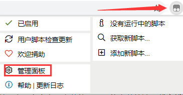

安装Tampermonkey的注意事项
目录：
# 安装【Tampermonkey】Q：什么是Tampermonkey？
A：Tampermonkey，俗称“油猴”，是一款在览器上运行和管理脚本的插件。所谓脚本就是一段代码，它们能够优化您的网页浏览体验。安装之后，有些脚本能为网站添加新的功能，有些能使网站的界面更加易用，有些则能隐藏网站上烦人的部分内容。
前往浏览器扩展中心安装 Tampermonkey 或暴力猴#
| 浏览器 | 安装地址 | 说明 |
|---|---|---|
| 360极速浏览器 | 扩展商店地址 | |
| 360安全浏览器 | 扩展商店地址 | |
| QQ浏览器 | 扩展商店地址 | |
| UC浏览器 | 下载安装 | 离线下载，手动安装 |
| 遨游浏览器 | 扩展商店地址 | |
| Chrome浏览器 | 扩展商店地址 | 需要科学上网，或离线下载 |
| 火狐浏览器 | 扩展商店地址 | |
| Microsoft Edge | 扩展商店地址 | |
| Internet Explorer | 不支持 | 都0202年了还有人用IE？ |
| 其他Google内核浏览器 | 下载安装 | 离线下载，手动安装 |
| 360极速浏览器 | 扩展商店地址 |
可直接在以上应用商店直接安装使用，不能安装的请下载离线版，安装离线看下面方法
点击查看谷歌内核浏览器tampermonkey插件离线安装方法
安装成功后浏览器扩展栏将出现

点击管理面板即可看到当前的插件版本